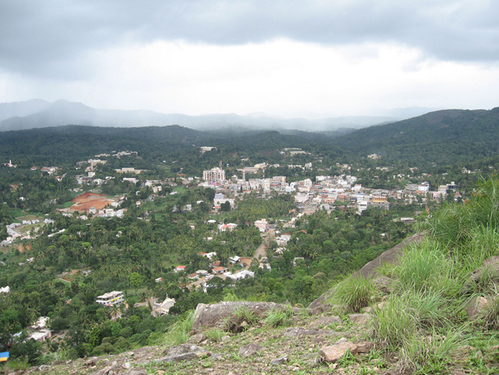

Idukki
This beautiful High range district of Kerala is geographically known for its Mountainous Hills and Dense Forests. Idukki which lies in the Western Ghats of Kerala is the second largest district in area but has the lowest population density.
Idukki has a vast forest reserve area; more than a half of the district is covered by forests. The urban areas are densely populated whereas villages are sparsely populated. Idukki is also known as the spice garden of Kerala.

TOP DESTINATIONS

Idukki Arch Dam

Periyar National Park

Munnar